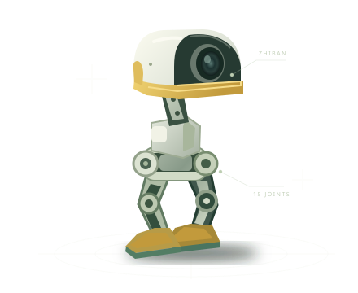

反馈频率
HARDWARE
—
硬件反馈 · 目标 100 Hz
ZHIBAN DUCK / CONTROL STUDIO
实时总览
连接、校准与控制，让机器人的每一个状态清晰可见。

结构示意 · 非实时姿态
策略推理
POLICY
—
控制周期 · 目标 50 Hz
在线舵机
JOINTS
—
等待关节反馈
惯性传感器
IMU
—
等待有效样本
01 / MOTION CONTROL
舵机控制
切换页面或后台运行只会将运动命令归零，不会自动卸力。需要释放舵机时，请使用右上角「立即卸力」。单个舵机缺失不阻止其余舵机运行，上机前仍需确认全部 ID 在线。
DIRECTION
运动遥控
滚轮模式下长时间保持外八姿态可能使侧摆电机发热，请定期停机休息。
默认可滑动页面。点击启用后拖动摇杆；松手、取消或离开页面即归零并锁定。
vx 0.00 · vy 0.00
ωz 0.00
W
S
前后
A
D
横移
Q
E
转向
拖动摇杆，松开回零；中心死区 15%，运动指令平滑过渡。 范围：vx -0.2～+0.4，vy ±0.3，ωz ±1.0。
HEAD & MOUTH
头部与嘴部
头部通道 1–4：±1 rad。嘴部 ID 34：0–30°，随 50 ms 命令心跳发送，不进入策略观测。
POLICY STATE
行走与恢复
当前模型
—
相对重力方向倾角
—
阶段计时
—
查看恢复与动作约定
倾角超过 55° 持续 0.15 s 后选择起身模型，保持 action = 0 共 1 s，再执行起身；倾角低于 15° 持续 1 s 后恢复行走。起身时运动和头部命令归零，仅推理模式不使能扭矩。拾取采用 4 s 相位周期，嘴部先打开到 30°，φ ≥ 0.4 时闭合。翻滚持续 1.9 s，运动和头部命令归零，腿部与头部平滑系数临时设为 0.15，期间不按倾角切换起身，结束后恢复原系数。
ADVANCED 动作与 IMU 参数 展开调整
动作设置 行走 / 其他模型
滚轮与其他模型分别保存设置。滚轮默认：缩放 0.7、腿 α 0.4、头 α 0.5；其他默认：1、0.45、0.2。缩放作用于相对初始姿态的动作偏移，松开滑块提交，重启恢复默认值。
IMU 滤波
角速度 α 越大越平滑，重力 τ 越大则加速度校正越慢。提交后即时生效，重启恢复默认值。
02 / LIVE TELEMETRY
实时状态
惯性数据
加速度
m/s²
—
角速度
°/s
—
重力方向
单位向量
—
COMMAND LINK
等待命令链路数据
右侧为总线关节顺序。离线舵机会单独标记；连接中断后，历史读数不应视为当前状态。
| 关节 ID | 实测 / ° | 目标 / ° | 状态 |
|---|---|---|---|
| 等待硬件反馈… | |||